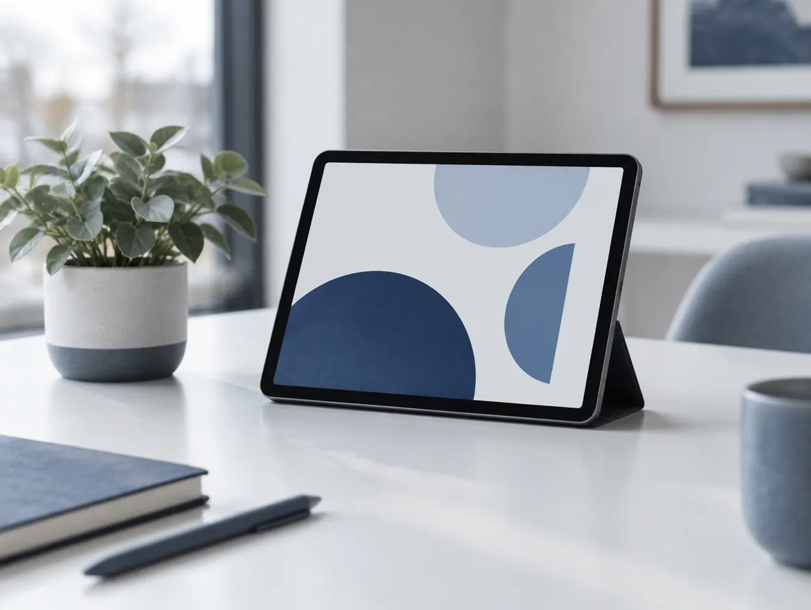
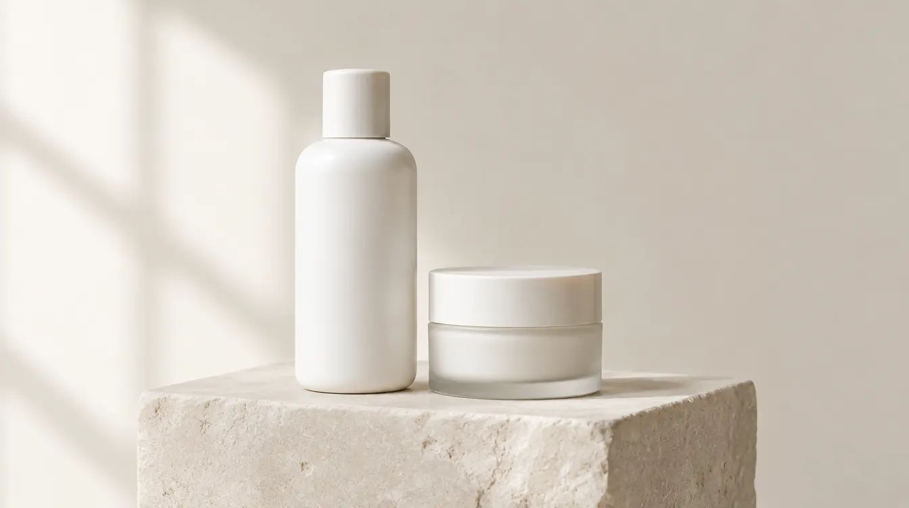
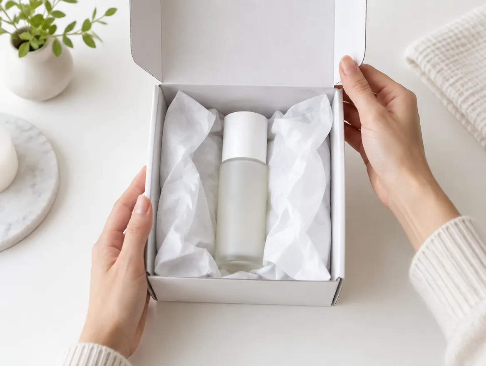
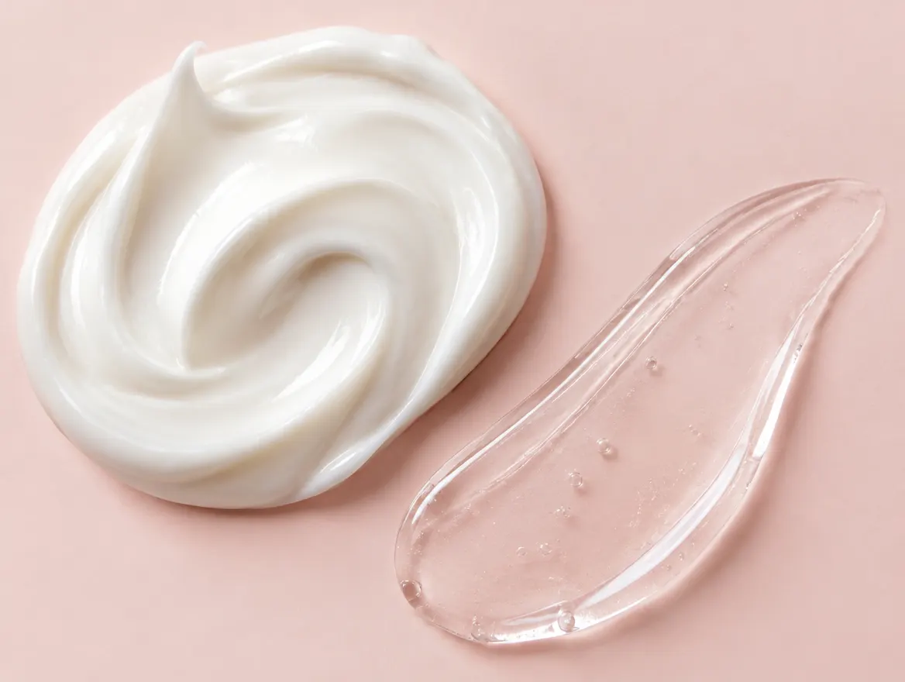

このページは上位プランに含まれます
現在のプランでは表示されません。上のバーで約5ページ以上に切り替えると見られます。
LP（1枚もの）プランは1ページ構成です。
このページは約5ページ以上のプランに含まれます。
TOP
ここに、伝えたい価値を一言で。
サンプルの説明文です。実際の文章は制作時にヒアリングをもとに作成します。
お問い合わせはこちらサービスの特徴
サービス名のサンプル
二〜三行程度の説明文が入ります。内容はダミーです。
企画・設計
課題の整理から進め方まで、丁寧に整理します。

デザイン制作
目的に合わせて見やすく使いやすい画面を整えます。
数字で見るサービス
お知らせ
サンプルのお知らせタイトルが入ります
新しい取り組みについてのご案内
サイトをリニューアルしました
夏季休業のお知らせ
オンラインセミナーを開催します
提供サービス
サービス名のサンプル
二〜三行程度の説明文が入ります。内容はダミーです。
企画・設計
課題の整理から進め方まで、丁寧に整理します。
デザイン制作
目的に合わせて見やすく使いやすい画面を整えます。
開発・実装
安定して動く仕組みを、無理のない範囲で組み上げます。

運用サポート
公開後の更新や相談にも対応する想定の文章です。
導入コンサルティング
現状を確認し、進め方の選択肢をご提案する想定です。
まずはお気軽にご相談ください
サンプルの説明文です。実際の文章は制作時にヒアリングをもとに作成します。
お問い合わせはこちらLP（1枚もの）サービス
ここに、伝えたい価値を一言で。
サンプルの説明文です。実際の文章は制作時にヒアリングをもとに作成します。
お問い合わせはこちらサービス
サービス名のサンプル
二〜三行程度の説明文が入ります。内容はダミーです。
企画・設計
課題の整理から進め方まで、丁寧に整理します。
デザイン制作
目的に合わせて見やすく使いやすい画面を整えます。
選ばれる理由
実績
サービス名のサンプル
二〜三行程度の説明文が入ります。内容はダミーです。
企画・設計
課題の整理から進め方まで、丁寧に整理します。
デザイン制作
目的に合わせて見やすく使いやすい画面を整えます。
開発・実装
安定して動く仕組みを、無理のない範囲で組み上げます。
運用サポート
公開後の更新や相談にも対応する想定の文章です。
導入コンサルティング
現状を確認し、進め方の選択肢をご提案する想定です。
ご利用の流れ
- STEP01
ヒアリング
ご要望や状況をうかがう想定です。
- STEP02
企画
進め方の方向性を整理します。
- STEP03
設計
構成や必要な素材を確認します。
よくある質問
相談だけでも問い合わせできますか。
内容が固まっていない段階でもご相談いただけます。状況をうかがい、進め方をご案内する想定です。
対応できる範囲を教えてください。
企画から公開までを想定していますが、範囲はご要望に応じて調整します。詳しくはお問い合わせください。
資料は用意が必要ですか。
既存の資料があれば拝見しますが、無くても進められます。必要な素材は個別にご案内します。
返信までどのくらいかかりますか。
通常は数営業日以内にご連絡する想定です。内容によってはお時間をいただくことがあります。
お知らせ
サンプルのお知らせタイトルが入ります
新しい取り組みについてのご案内
サイトをリニューアルしました
夏季休業のお知らせ
オンラインセミナーを開催します
会社概要
- 会社名
- 株式会社サンプル
- 設立
- 2010年4月
- 代表者
- 代表取締役 山田 太郎
- 所在地
- 東京都千代田区サンプル町1-2-3
- 資本金
- 1,000万円
- 事業内容
- Webサイト制作、システム開発、運用支援
- 従業員数
- 25名
お問い合わせ
サンプルの説明文です。実際の文章は制作時にヒアリングをもとに作成します。
お問い合わせはこちらLP（1枚もの）商品

width: 100%毎日のひとときに、そっと寄り添う一品。
素材の選び方から使い心地まで、商品の魅力を伝えるサンプルの説明文です。実際の文章は商品に合わせて作成します。
商品を見るあなたの毎日に、ほんの少しの余白を。
そのために何ができるのかを、考え続けています。
SCROLL商品のこだわり
商品の世界観
商品が生まれた背景や、目指す世界観を伝えるダミー文です。
詳しく見る →厳選した素材
使用する素材の特徴を、二〜三行で紹介するサンプルです。
詳しく見る →
やさしい使い心地
テクスチャーや香りなど、使ったときの印象を伝える想定です。
詳しく見る →素材
植物由来エキス
植物から抽出した成分を紹介する想定のダミー文です。
保湿成分
しっとりした使い心地を支える成分を紹介する想定です。
無香料処方
香りを加えない考え方を紹介する想定の文章です。
使い方
- 01
手に取る
適量を手に取る方法を案内する想定です。

02なじませる
やさしくなじませる手順を紹介する想定の文章です。
- 03
重ねる
続けてお使いの製品を重ねる手順を案内する想定です。
製造の工程
- STEP 01
原料の選定
素材の産地や状態を確認して選ぶ想定です。
- STEP 02
調合
配合を整えて試作を重ねる想定の文章です。
- STEP 03
品質検査
出荷前に状態を確認する工程を紹介する想定です。
- STEP 04
梱包・出荷
丁寧に包んでお届けする流れを紹介するサンプルです。
よくある質問
使い方を教えてください。
1回の目安量や使う順番を案内する想定のダミー文です。詳しくは同梱の説明書をご覧ください。
保管方法はありますか。
肌質によって使い分けは必要ですか。
香りはありますか。
商品情報
- 名称
- サンプル商品
- 内容量
- 100g
- 成分
- 成分Aのサンプル、成分Bのサンプル
- 使い方
- 1日1回、適量をお使いください。開封後はお早めにお使いください。
- 保管
- 直射日光を避け、涼しい場所で保管してください。小さなお子さまの手の届かない場所に置いてください。ご不明点はお問い合わせください。
- リリース
- 2026年10月（予定）
NOTES
- 掲載の内容はサンプルです。実際の商品情報に差し替えます。
- 画像はイメージです。
ご購入・お問い合わせ
素材の選び方から使い心地まで、商品の魅力を伝えるサンプルの説明文です。実際の文章は商品に合わせて作成します。
商品を見る